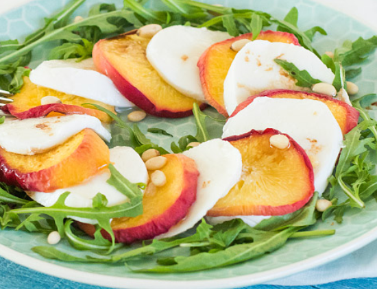

Caprese salade met perzik
De klassieke caprese salade kent iedereen wel, maar met deze variant met gekarameliseerde perzik en rucola kun je iedereen verrassen!
Ingrediënten
- 3 perziken
- 2 eetlepels honing
- 1 eetlepel pijnboompitten
- een flinke hand rucola
- 2 eetlepels balsamico azijn
- een handje pijnboompitten
- een snuf zeezout
Bereidingswijze
- Verwarm de oven voor op 200 graden Celcius
- Halveer de perziken, verwijder de pitten en snij ze in plakjes.
- Bestrijk de perziken met de honing. Leg ze op een beklede bakplaat en zet 20 minuten in de oven todat de perziken goudbruin zijn.
- Snijd de mozzarella in plakken. Maak de salade op door dakpansgewijs de plakken perzik en mozzzarella op een bord te leggen, met daaromheen de rucola.
- Besprenkel de caprese salade met de balsamico azijn en maak hem af door een klein beetje zeezout en wat pijnboompitten overheen te strooien.
